Edit the box.
?
Meheh, fun game.
")
The best messageboard game I've played in a while.
Zoom Blur.
Edited with extreme prejudice.
Hmmm.
The box seems to have grown since the last time I checked this topic.
Best game I've played in a while
tah dah.
Kaboom.
OBJECTION!
Cookt.
Woo.
Da box, da box, da box!
InVeRteD.
Random effects! Yay!
To anyone who says Paint.NET is a bad image editor I say this:
the box.
The box has evolved.
What the heck? Most everyone here was posted a new box, instead of editing it.
Here's mine:
EDIT: MAN, you guys post fast. Here's the new one:
BEWARE THE MOONLIGHT!
Here's mine:
EDIT: MAN, you guys post fast. Here's the new one:
BEWARE THE MOONLIGHT!
The box has evolved again.
Dibs on the next box. Editing it now...
there.
there.
I call next box.
Edit: The box has arrived.
Edit: The box has arrived.
The box has been made. Fear it 
I have the most posts in this thread.
Psychosnail uses Paint.NET! I knew it!

Dibs. Editing...
box
Growing...
Dibs on next one.
Edit: Here it is, and yes, I do use Paint.NET.
Edit: Here it is, and yes, I do use Paint.NET.
Dibs on the one after yours.
It has grown
It has grown
Dibs on this one.
Edit: Here it is.
Edit: Here it is.
DIBS ON NEXT ONE!
Edit: Here it is.
Edit: Here it is.
Dibs.

And wtf bhz... You just copied Eiturlyf's box into your post and completely skipped me!
And wtf bhz... You just copied Eiturlyf's box into your post and completely skipped me!
Dibsdibsdibs.
Dibs
Edit: Yay.
Edit: Yay.
Dibs on the one after yours.
Edit: Sorry for the delay ;_;
Edit: Sorry for the delay ;_;
Dibs on the one after yours.
Edit: Working on it...
Edit 2: Done.
Edit: Working on it...
Edit 2: Done.
DIBS!
Edit: Done
Edit: Done
Dibs.
Edit.
Edit.
Dibsdibsdibs.
Dibs.
Dibs after you.
Edit: Boxed.
Edit: Boxed.
diboxed.
Dibs.
Box
Dibs.
Dibs.
Dibs.
Dibs.
Edit: Colors O_O
Edit: Colors O_O
Dibs.
Dibs.
Dibs.
Asemasta!
Whee.
FIRE!
Dibs.
Edit: Here we go:
Pretty fast dontcha think?
Edit: Here we go:
Pretty fast dontcha think?
Dibs.
Edit: Fast.
Edit: Fast.
Box.
Boxdibs.
Box.
dibs.
Box.
DIBS
dibs.
fugly.
fugly.
DIBS!
Box.
Box.
Dibs.
Dibs.
Do the owners of the first 64 boxes in this thread mind if I use them to make a checkerboard?
There, a box.
Do the owners of the first 64 boxes in this thread mind if I use them to make a checkerboard?
There, a box.
______ | | |BOX | |____|
Dibs after you.
I don't mind.
Edit: Print-screened your box, enlarged it, added a weave pattern, did some color flipping/rotating with it, made it slightly transparent with my previous box in the background, and did some more color flip/rotate.
I don't mind.
Edit: Print-screened your box, enlarged it, added a weave pattern, did some color flipping/rotating with it, made it slightly transparent with my previous box in the background, and did some more color flip/rotate.
I do not mind.
No dibs.
No dibs.
Dibs.
Do the owners of the first 64 boxes in this thread mind if I use them to make a checkerboard?
That would actually be really cool. If you do, be sure to post it here or something.
DIBS.
dibs
I finally posted mah box above.
No dibs here.
Anyone else mind about the checkerboard?
No dibs here.
Anyone else mind about the checkerboard?
I finally posted mah box above.
No dibs here.
Anyone else mind about the checkerboard?
Well, by getting approval from heatwave, Eiturlyf, and me, you got approval from all the people who have posted more than 3 times in this topic, and even if you don't include all the boxes that aren't from us three, you'll still have 80% of the boxes to choose from.
No dibs. Editing the box right now.
DIBS!
You can barely see the connection between some of these posts, really. I think you're editing the previous box a little too much; the last few just look like a series of random boxes with nothing really to do with each other.
Edit: Not including the last one.
Edit: Not including the last one.
You can barely see the connection between some of these posts, really. I think you're editing the previous box a little too much; the last few just look like a series of random boxes with nothing really to do with each other.Yeah, I agree. Dibs.
Edit: Not including the last one.
I agree as well. Lets not completely change the box from now on. Just ad something to it. In other words, you should be able to tell that your box came from the previous. dibs.
did the guy who started this topic ever post more than once?
Anyone else mind about the checkerboard?I hardy think anyone would mind. You shouldn't have any trouble getting permission from the rest of the posters here.
did the guy who started this topic ever post more than once?
did the guy who started this topic ever post more than once?Yes, he posted a total of twice in this topic, including the first post.
People should say what they did to the image, too.
Dibs.
Edit: Twisted the image, did a radial blur.
People should say what they did to the image, too.Agreed.
Dibs.
Edit: Ink Sketched it, duplicated the layer, smudged the top layer, set the top layer blend mode to 'Xor' and flattened.
Inverted, rotated 90 degrees, added "box" text.
The box is 330x330.
The box is 330x330.
Dibs.
Duplicate layer - Bottom layer - Glass Blocks - Top layer - Layer blend mode = Color Burn.
Duplicate layer - Bottom layer - Glass Blocks - Top layer - Layer blend mode = Color Burn.
People should say what they did to the image, too.I was just about to suggest that.
dibs.
Layer duplicated, set behind original. pixelated, Gaussian Blur, Colorized, added fog, Colorized again, Erased with a splatter brush on the first layer, Then applied a radial Blur. Flattened, added text, customized the text, added gradient behind the text. Flattened again.
Dibs.
Glass blocks - Water reflection.
Glass blocks - Water reflection.
dibs.
Sobel, Desaturated, Sharpened.
Sobel, Desaturated, Sharpened.
Dibsdibsdibs.
Edit: I forgot, sorry ;_;
Kaleidoscope'd.
Edit: I forgot, sorry ;_;
Kaleidoscope'd.
Ahem.
dibs.
Colorized, Despeckled, Red Eye Removed .
.
dibs.
Colorized, Despeckled, Red Eye Removed
. Dibsies.
Curves, luminosity (played around with the brightness of colors) - Duplicated layer - Top layer, Polar inversion - Curves - Top layer blend mode Xor.
Curves, luminosity (played around with the brightness of colors) - Duplicated layer - Top layer, Polar inversion - Curves - Top layer blend mode Xor.
Maximum saturation, maximum contrast, minimum brightness, -54.4 sharpness, 62.1 exposure, Antique, Sepia, and Color boosting effects added.
Dibz.
Bulge- Zoom Blur- Duplicate layer- Top layer, twist 19,68- Bottom layer, twist -19,68- Top layer blend mode Difference.
Bulge- Zoom Blur- Duplicate layer- Top layer, twist 19,68- Bottom layer, twist -19,68- Top layer blend mode Difference.
I forgot what I did to it... =P
I forgot what I did to it... =PColor tint and glow..?
Dibs.
Edit: Duplicate layer- top layer, zoom blur- top layer blend mode Additive.
dibz0rz.
Size 50%, Monochrome.
Size 50%, Monochrome.
Dibsies0rz.
Zoom in- Duplicate layer- Top layer, generate kaleidoscope- Top layer blend mode Difference- bottom layer, Gaussian blur 5 pixels.
Zoom in- Duplicate layer- Top layer, generate kaleidoscope- Top layer blend mode Difference- bottom layer, Gaussian blur 5 pixels.
Duplicate layer, render fire on the top layer, change layer blend mode to screen, curves feature in Paint.NET (removed all the red), color flip/rotate.
I still have the most posts in this topic, after leaving it for more than two weeks?
I still have the most posts in this topic, after leaving it for more than two weeks?
Dibz.
Apparently, people forget.
Duplicate layer- Top layer, dither- Top layer blend mode Screen- Flatten- Changed the black in the center to a green-to-black gradient.
Apparently, people forget.
Duplicate layer- Top layer, dither- Top layer blend mode Screen- Flatten- Changed the black in the center to a green-to-black gradient.
dibs.
Color flip/rotate, Gaussian Blur 2 pixels, Twist 30 degrees.
Dibs.
Duplicate layer- Top layer, twist -40.00 degrees- Top layer blend mode lighten.
Duplicate layer- Top layer, twist -40.00 degrees- Top layer blend mode lighten.
I did something completely random with Paint.NET.
Dibsibsibs.
Working on it...done.
Working on it...done.
Dibseh.
Gradient Mapping.
Gradient Mapping.
I'm getting the hang of this 
Please don't change it that much.
Dibs.
Edit: Curves.
Dibs.
Edit: Curves.
Frosted glass, Pixelate, Polar Inversion.
Gradient Mapping.
How do you gradient map?
Bulge-Radialblur-Recolour-Tile-Frost-Line-Line-Tile
Edit:You post faaast.
Bulge-Radialblur-Recolour-Tile-Frost-Line-Line-Tile
Edit:You post faaast.
Twist,Polar Inversion, Twist, Polar inversion, twist, frosted glass, color inversion, curves. 
DUDE! You're suppoused to be able to see what it used to be like!
Dibs.
Edit: Conditional Hue/Saturation.
Dibs.
Edit: Conditional Hue/Saturation.
Whoops, sorry...
Dibs.
Played around with stuff.
Dibs.
Played around with stuff.
Soften Portrait.
...
Sharpen+
Equations.
Equations.
Heh.
People should say what they did to the image, too.Dibs.
Edit: Duplicate layer- Top layer, curves- Radial blur- Top layer blend mode Glow and 135 Opacity.
Gaussian blur, duplicate layer, twist, glass, flatten.
DIIBS
Edit: Line-Line-Tiles-Zoom-Twist-Colour Invert-Line-Line-Line-Line-Bulge-Twist-Tiles-Zoom
Edit: Line-Line-Tiles-Zoom-Twist-Colour Invert-Line-Line-Line-Line-Bulge-Twist-Tiles-Zoom
Dibs.
DON'T MAKE THE BOX UNREGOCNIZABLE.
Edit: Conditional Hue/Saturation.
DON'T MAKE THE BOX UNREGOCNIZABLE.
Edit: Conditional Hue/Saturation.
Well, we already have 2 dibs..
DIBS!
sepia, zoom blur, glass
DIBS!
sepia, zoom blur, glass
Dibs.
Edit: Conditional Hue/Saturation.
Edit: Conditional Hue/Saturation.
Dibs.
Noise, Black and White.
Noise, Black and White.
Dibs.
Edit: Soften Portrait- Duplicate layer- Top layer, Gaussian blur 8 pixels- Top layer blend mode Xor.
Edit: Soften Portrait- Duplicate layer- Top layer, Gaussian blur 8 pixels- Top layer blend mode Xor.
Glow, Invert colors, Bulge.
Gradient Mapping.
Line Line Tiles Tiles
Official fiesta of Pick on me day in 5... 4... 3... 2...
Official fiesta of Pick on me day in 5... 4... 3... 2...
Garr.
Dibs.
Edit: Conditional Hue/Saturation. --------------------Attachment was deleted
Dibs.
Edit: Conditional Hue/Saturation. --------------------Attachment was deleted
line line noise twist tile
no dibs
can someone tell me how to attach a image
can someone tell me how to attach a image
Meh, load the newest box in mspaint, paint.net etc., when you finished save it, click on add reply, scroll down to attachments, find your image, open it, click add reply (after typing your text) and presto.
Auto level, Polar Inversion, Color inversion.
Auto level, Polar Inversion, Color inversion.
Invert colors, Bulge,
Dobbs.
Conditional Hue/Saturation.
Conditional Hue/Saturation.
dibs.
Mosaic.
Mosaic.
Dibs.
Sepia, Tile Reflection, Hue/Saturation.
Sepia, Tile Reflection, Hue/Saturation.
erm, did you skip me? dibs. Never mind. no dibs. Oh. Whatever. re-dibbed.
Filters>Edge Detect>Neon...
Filters>Edge Detect>Neon...
I did. Sorry. Dibs.
Pixelate, Blur, Glass, Twist x20, layer, julia fractal, pixelate, blur, noise, glass, twist, Bulge x6.
Pixelate, Blur, Glass, Twist x20, layer, julia fractal, pixelate, blur, noise, glass, twist, Bulge x6.
Oh great another box... Dibs.
A portal is opened, adding noise, twist, bulge x10.
A portal is opened, adding noise, twist, bulge x10.
Dibs...
Sketch>Halftone Pattern, Artistic>Neon Glow, Distort>Ocean Ripple, Noise>Despeckle, [duplicate layer] Render>Fibers [set layer to colour burn and set opacity to 75%]

Sketch>Halftone Pattern, Artistic>Neon Glow, Distort>Ocean Ripple, Noise>Despeckle, [duplicate layer] Render>Fibers [set layer to colour burn and set opacity to 75%]
Dobbs.
Conditional Hue/Saturation.
Conditional Hue/Saturation.
Dibs.
The portal sucks everything in!
Invert colors, glow x3, twistx3
The portal sucks everything in!
Invert colors, glow x3, twistx3
Conditional Hue/Saturation.
Dibs.
Sepia, Bulge, Twist, Ink Sketch.
Sepia, Bulge, Twist, Ink Sketch.
Sharpen+ repeated over and over and over..
Dibs.
Oil Painting, Invert colors, tiles.
Oil Painting, Invert colors, tiles.
Dibs.
Edit: Gaussian Blur, 3 pixels and Sharpen+.
Edit: Gaussian Blur, 3 pixels and Sharpen+.
dibs.
zoom blur, curves.
zoom blur, curves.
Dobbs.
Edit: Sharpen x3.
Edit: Sharpen x3.
Looks like we're all gonna get sucked in...
I forgot what I did.
I forgot what I did.
Glass Blocks.
Dibs.
Glow, Invert Colors, Sharpen x10.
Glow, Invert Colors, Sharpen x10.
Dibs.
Edit: Soften Portrait, Vignette.
Edit: Soften Portrait, Vignette.
Forgot.
Duplicate layer- Top layer, Twist 19 px- Bottom layer, twist -19 px- Top layer blend mode Lighten.
Filter Gallery: Conte Crayon
Sharpen+ x3.
Filter Gallery: Glowing Edges
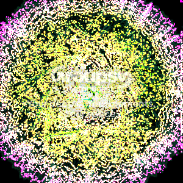
Gaussian Blur 7 pixels and Curves.
Filter Gallery: Neon Glow
Vignette.
Filter Gallery: Glowing Edges
New layer, Gradient bars, top layer blend mode Xor.
Filter Gallery Photocopy
Gaussian Blur, Render Fire.
Filter Gallery: Accented Edges
Dibsity doo.
Weave, Text, Glow, Paste.
Weave, Text, Glow, Paste.
DOBBS.
GLAYSHURRR... dibs
So, dibs means shit all or what?
So, dibs means shit all or what?
Invert colors, Filter Gallery: Glowing Edges
Sorry for the wait 
Splinter Blur.
Splinter Blur.
Added text, sharpened image.

Vignette.
Craquelure
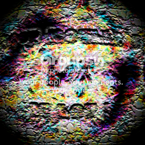
Dibs
Tinted, boosted color, changed saturation, temperature, and rotated it. Among others. Make me think of looking up in the middle of a forest in the twilight... Or I've been playing A Link to the Past too long. Either one's fine.
Tinted, boosted color, changed saturation, temperature, and rotated it. Among others. Make me think of looking up in the middle of a forest in the twilight... Or I've been playing A Link to the Past too long. Either one's fine.
Conditional Hue
Reticulation, Glowing Edges
Conditional Hue
Hah, thats pretty trippy
Water Paper
DON'T MAKE THE BOX UNREGOCNIZABLE.
I'm ignoring that one.
Dibs.
Edit: Sharpen+ x12
I'm ignoring that one.
Dibs.
Edit: Sharpen+ x12
Neon glow
dibs!!!!
Twist, invert colors, glass, text.
Twist, invert colors, glass, text.
Dibsy.
Punch, erode x2, colored edges with zero blur and low luminance. (Gave it a box-made-of-boxes feel.)
Punch, erode x2, colored edges with zero blur and low luminance. (Gave it a box-made-of-boxes feel.)
Edit: Sharpen+ x2.
Sharpen, Render Clouds, Angled Strokes
Conditional Hue
Dibs.
Oil Painting.
Oil Painting.
Patchwork, invert colors, cutout, twirl, glowing edges, angled strokes, ink outlets, invert color, glowing edges, text 
Point Warp.
Lighting effects, Dark strokes.

Oil painting, ink sketch, invert colors, twist.
Crop, invert colors
Duplicate layer, Gaussian Blur, render Fire, Top layer blend mode Difference.
Text (Underline, bold[/b]), Bulge, Zoom Blur (First non-tutorial done Paint.net Picture)

Dibbbbssss.
Edit: Duplicate layer- Top layer, twist 30 px- Bottom layer, twist -30 px- Top layer blend mode Darken.
Edit: Duplicate layer- Top layer, twist 30 px- Bottom layer, twist -30 px- Top layer blend mode Darken.
Sorry something happened to the pic and it's taking so long to edit my post
EDIT: It's working now
EDIT: It's working now
Errm.. OK.
forgot
Dibbbbssss.
Edit: Duplicate layer- Top layer, twist 30 px- Bottom layer, twist -30 px- Top layer blend mode Darken.
That. is really. Cool. Great work.
Dibbbbssss.That. is really. Cool. Great work.
Edit: Duplicate layer- Top layer, twist 30 px- Bottom layer, twist -30 px- Top layer blend mode Darken.
Thank you
--
Twist -22,22- Duplicate layer- Top layer, twist 30 px- Bottom layer, twist -30 px- Top layer blend mode Darken- Flatten and invert colors.
Glowing edges, neon glow, invert color.
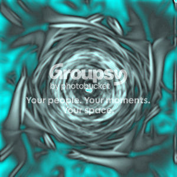
Majority.
Glowing edges.
Splinter blur.
Layer, Darken, twist , invert colors, zoom blur.
Sharpen+ x5
Invert colors, glow, twist.
Invert Colors.
Outline.
Invert colors.
Sharpen, Text.
Tile Inversion.
Neon glow
Oilify, Cartoonify
Umm... I think it was bulge and twist in Paint.NET
Sorry forgot the box
Sorry forgot the box
Glowing Edges, Plaster..
Sepia, ink sketch, twist.
BTW, don't change the box so much.
BTW, don't change the box so much.
Poitillize, Polar Coordinates, Glowing edges, Trace Contour, Glowing edges.
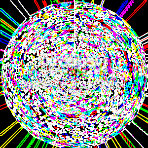
Inverted, added box text.
Halftone Color, Invert Color.
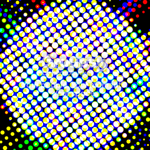
Dibs.
Should I bother catching up to Eiturlyf in number of posts in this thread?
Edit: Or rather, trying to catch up?
Edit 2: Zoom blur, Gaussian blur, removed all red and green, added weave pattern, twist effect.
Should I bother catching up to Eiturlyf in number of posts in this thread?
Edit: Or rather, trying to catch up?
Edit 2: Zoom blur, Gaussian blur, removed all red and green, added weave pattern, twist effect.
Difference clouds.
Sepia, Noise, New layer - Julia fractal, twist x15, flatten.
Swapped halves horizontally, then vertically.
Invert colors, oil painting.
Note paper, find edges, Neon glow, Trace contour, Glowing edges.
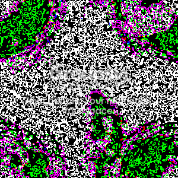
Soften Portrait, Color and Polar inversion
lens distortion, emboss
Dibs.
Edit: Unfocus, color flip/rotate (even though it ended up being the same as inverting the colors).
Edit: Unfocus, color flip/rotate (even though it ended up being the same as inverting the colors).
I forgot
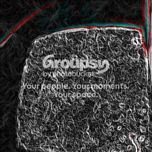
Dibs.
Edit: Duplicate layer, Twist top layer -30 degrees, lower layer 30 degrees, top layer blend mode Darken, merge layer downwards, black & white, gaussian blur 1 pixel.
Edit: Duplicate layer, Twist top layer -30 degrees, lower layer 30 degrees, top layer blend mode Darken, merge layer downwards, black & white, gaussian blur 1 pixel.
I forgot.
This should really get pinned.
This should really get pinned.
Pinned.
Thought I'd shake things up by actually drawing something instead of applying filters.
Thought I'd shake things up by actually drawing something instead of applying filters.
i did some stuff
I decided to paint like Atilla. Good idea Atilla. GO ATILLA!!!(Even though he has far more superior artistic abilities than I do )
)Heat pl0x.
Inverted, added text.
nice.dibs.
Did some selective coloring, added a Z.
Thank you, Kass.
Liquify, glowing edges.
Hey!  Not cool. you skipped me! Never mind. Thanks, Kass.
Not cool. you skipped me! Never mind. Thanks, Kass. 
Might I remind everyone that the proper way to contribute to this game is to reserve your spot first by saying dibs. Then, after editing the box, you edit your post and attach the new box.
Not cool. you skipped me! Never mind. Thanks, Kass. Might I remind everyone that the proper way to contribute to this game is to reserve your spot first by saying dibs. Then, after editing the box, you edit your post and attach the new box.
...
wait.
Holy poop, nice fox atilla
Paint brush tool, Glowing edges.
Paint brush tool, Glowing edges.
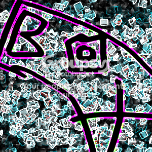
boxed
Glowing edges, find edges, photocopy, txt.
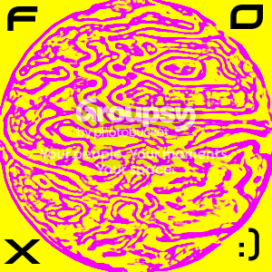
Dibs.
Edit: Color flip/rotate, color flip/rotate, twist, radial blur.
Edit: Color flip/rotate, color flip/rotate, twist, radial blur.
Dibises dobbs.
Drew "Box fools" then twisted, bulged, and inverted colors.
Totally trippy.
Drew "Box fools" then twisted, bulged, and inverted colors.
Totally trippy.
NO RESERVE
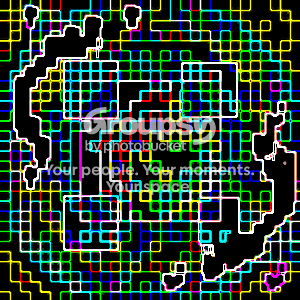
talk about an ugly thing to edit ><
uhm.. crapload of gimping. there was some row removal, cubism, noise and oilify, and some fractals, though i used them sparingly / unnoticably.
uhm.. crapload of gimping. there was some row removal, cubism, noise and oilify, and some fractals, though i used them sparingly / unnoticably.
i wrote box, edited it, then wrote box agian/
Water paper, find edges.
same thing not really
Glowing edges, difference clouds.
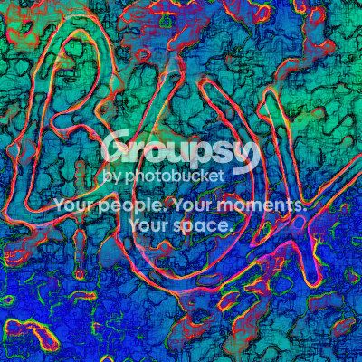
mhm
inverted. a lot.
stff
Extrude, difference clouds, accented edges.
that doenst even resenmber.
that doenst even resenmber.
Sorry, the Extrude thing made it look super different.
Kass: Does that count as dibs?
Dibs.
Edit: Duplicate layer, Gaussian Blur 2 pixels on top layer, added "box" to the top layer, did a water effect on the top layer, Gaussian Blur 2 pixels on bottom layer, Wobble effect on bottom layer, Radial Blur on top layer, Zoom Blur on bottom layer, merge layers.
Yes, that's a lot of steps, but it's not hugely different from the box I started out with.
Dibs.
Edit: Duplicate layer, Gaussian Blur 2 pixels on top layer, added "box" to the top layer, did a water effect on the top layer, Gaussian Blur 2 pixels on bottom layer, Wobble effect on bottom layer, Radial Blur on top layer, Zoom Blur on bottom layer, merge layers.
Yes, that's a lot of steps, but it's not hugely different from the box I started out with.
Difference clouds, Solarize, and I copied and pasted the box txt.
Soften Portrait, glow, ink sketch

Txt, Graphic pen, High Pass.
Render fire, gaussian blur, render fire (again), color flip/rotate, increase brightness +25.
Edit: Whoa, that looks quite different from the previous box. The fire effect tends to do that. It's still a bit recognizable, though.
Edit: Whoa, that looks quite different from the previous box. The fire effect tends to do that. It's still a bit recognizable, though.
Glowing edges!!!!
Color flip/rotate, removed all the red, simplify x5, Gaussian Blur, Radial Blur
I totally forgot what I did... 
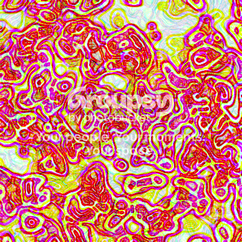
Dibs after you.
@Kass: Over 90% of all your posts are in the Messageboard Games section. That's scary.
@Kass: Over 90% of all your posts are in the Messageboard Games section. That's scary.
Dibs, because 'snail is too slow.

If you haven't played portal the flash version, you won't understand.
If you haven't played portal the flash version, you won't understand.
Lines, Glowing edges.
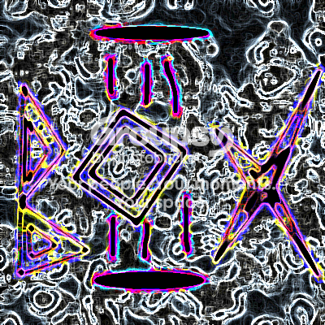
Erode/Dilate - Duplicate layer - Top layer, Twist amount 30 - Bottom layer, Twist -30 amount - Top layer Blend mode 30.
Text, glowing edges.
Zoom Blur, Frosted Glass, Tile Reflection.
Multiview warp.
Dibs. Image up.
Invert Colors, Polar Inversion, Oil Painting, Hue / Saturation.
Invert Colors, Polar Inversion, Oil Painting, Hue / Saturation.
Difference clouds, invert colors, text, warp text.
Motion Blur, Brightness / Contrast, Pixelate.
Twist effect, brightness -70 contrast +45, color flip/rotate.
Solarize x2
Dibs.

Invert Colors, Paintbrush, Zoom Blur x10
Invert Colors, Paintbrush, Zoom Blur x10
Dibs.
Edit: Sharpen+ x3
Edit: Sharpen+ x3
Auto-Level, Fragment, Curves, Hue / Saturation.
This one looks so cool I'm making it my avatar.
This one looks so cool I'm making it my avatar.
invert colors, difference clouds, glowing edges, invert colors, glowing edges, cutout, difference clouds, crystallize, crosshatch.
Posterize.
Dibs.
Edit: Unfocus, Gradient Mapping.
Edit: Unfocus, Gradient Mapping.
Ink outlines, glowing edges, twirl, glowing edges, plastic wrap, cutout.
Sharpen+ x2
Cutout.
Dibs.
Edit: Red Eye Removal.
Edit: Red Eye Removal.
Deebz.
Sharpen, Oil Painting, Twist.
Sharpen, Oil Painting, Twist.
Pixelate+
Smear, sharpen.
un-dibs.
Radial blur, polar inversion, frosted glass, gaussian blur, hue / saturation.
Motion Blur, added blinds, Curve Bend, I warp, bucket fill, inverted colors more than once (invert all, and invert certain).
dibs.
messed with hue/saturation/lightness, used sobel filter, duplicated sobel layer, radial blur on duplicate layer, duplicated "blurred" layer several times.
messed with hue/saturation/lightness, used sobel filter, duplicated sobel layer, radial blur on duplicate layer, duplicated "blurred" layer several times.
Sumi-e.
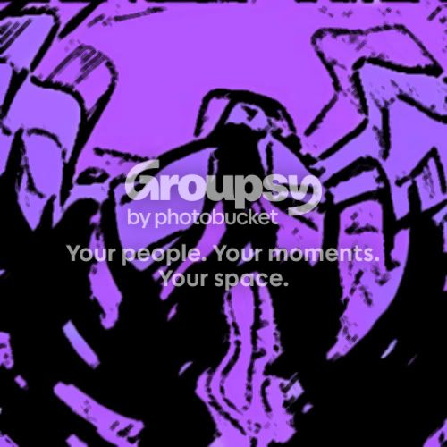
Brightness / Contrast, Hue / Saturation, Tile Reflection.
Don't make the box unrecognizable ;__;
Edit: Ink Sketch.
Pikman, do you use Paint.NET?
Edit: Ink Sketch.
Pikman, do you use Paint.NET?
Chrome.
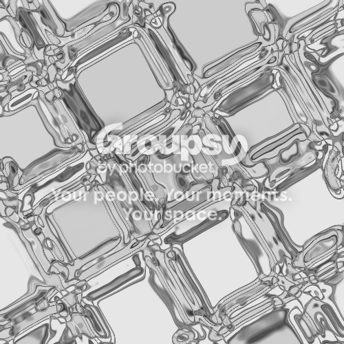
Sharpen+
Difference clouds, find edges, glowing edges, difference clouds.
Vignette, Sharpen+ x2.
Glowing edges.
Color flip/rotate, bulge, crystalize.
Color Flip/Rotate, Pixelate.
dibs
Edited:
Nvm, not dibs.
Edited:
Nvm, not dibs.
Um... cardboardize?
I just couldn't resist. But on a side note:
Sharpen, Gaussian Blur, Sharpen Again (aka Oversharpen), and Green Channel Blur
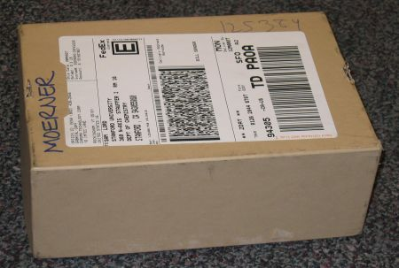
I just couldn't resist. But on a side note:
Sharpen, Gaussian Blur, Sharpen Again (aka Oversharpen), and Green Channel Blur
Oilify and neon...
Offset, Polar Coordinates.
Dibs.
Paint.NET pwnz all ur imag editurz.
Pencil Sketch, Twist
Paint.NET pwnz all ur imag editurz.
Pencil Sketch, Twist
Resize image to 400x400, simplify (radius 2) 10x, bulge (from center, +45), render fire, color flip/rotate, radial blur (5 degrees).
color balance, invert colors, edge, invert colors, neon, invert, sharpen, supernova, invert, whirl and pinch, bucket fill, video, mosaic, invert.
I did lots, I like GIMP
I did lots, I like GIMP
Invert colors, Fragment, Crystalize, Radial Blur, Twist.
URGH. ZE BOX.. IT'Z... IT'Z CHANGING TOO FAST. CAN'T KEEP UP.
Dibs.
Edit: Solarize x2, Motion Sharpen.
Dibs.
Edit: Solarize x2, Motion Sharpen.
Color flip/rotate, Curves (removed all red), Oil Painting, Gaussian Blur.
Invert Colors, Neon, Warp, Paintbrush, Warp. All done in Gimp. ")
PLEASE don't make it unrecognizable, or I will get... Agitated
Dibs.
Edit: Unfocus, Sharpen x2, Sharpen+ x2.
Dibs.
Edit: Unfocus, Sharpen x2, Sharpen+ x2.
BOX OMG!!!
Solarize, invert color, Photocopy, Paintbrush tool.
Majority.
Color flip/rotate (as always), brightness -40, weave, text.
Heh heh.
Tile Reflection, Brightness +20, Add Text, Border, Expand Canvas to 400x400 instead of 399x400, fill in extra column of pixels with black.
Glass blocks, invert colors, paintbrush.

Smudge, Sharpen+
Render fire.
Smart Blur, Red Eye Removal.
Craquelure, Photocopy.
Color flip/rotate, duplicate layer, water effect on top layer, wobble effect on bottom layer, radial blur on top layer, merge layers.
Gradient Mapping, Inside Out, Invert Colors.
Twist, Single Hue, New Layer below first layer, color picker tool, radial gradient on bottom layer, layer blend mode on top layer (lighten), flatten image.
Clothify, sharpen
Oilify, increase green level 30 points
Oil painting, color tint, invert intensity, bulge from center -125, zoom blur from center +15.
Gradient Mapping, Curves, Sharpen+ x2 and Vignette.
Gaussian Blur 2 pixels, simplify Radius 2 x6, Twist, Color Filter (Hue=0, Filter Density=150, Preserve Highlights=0)
Mezzotint - radial blur (zoom) - gradient adjustment layer - a whole crapload of text
some stuff
Resize to 400x400, New Layer (on top), Radial Gradient from center using a green-ish color that I used the dropper tool to obtain, Layer Blend mode (for top layer, Screen), Merge Layer Down, Radial Blur centered at center of image, 180 degrees.
Don't make the box unrecognizable ;__;PLEEEEASE.
Dibs.
Edit: Drop Ripple, Lomography, Sharpen+
Average Blur, Twist, Conditional Hue/Saturation, Invert colors.

Conditional Hue/Saturation and Sharpen+
Single Hue (orange-ish), Unfocus +1, Text.
I Didn't Do lots
Gradient Mapping, Unfocus, Sharpen.
Sharpen (20) x4, Invert intensity, recolored the light blue parts with red, unfocus +1, zoom blur from center +10.
Sharpen Eges, Sharpen X2, Motion Blur, Water Color, Neon Glow, Much more
Color flip/rotate, invert intensity, duplicate layer, water effect on top layer, wobble effect on bottom layer, flatten image.
Edge-detect, Cubism, Lens Flare.
Crystalize.
Point Warp x2, Smudge and Motion Sharpen.
Relief, Fire, Single Hue, Color Flip/Rotate.
Invert colors, Invert Intensity, Ink Sketch.
Some shizz
Majority.
pixel, ripple, contrast
Pixelate, Unfocus, Sharpen+
dibs
Gaussian Blur, Fire, Color Flip/Rotate, Glass Blocks.
-Nevermind-
Water Paper
Glowing edges.
Fire, Color Flip/Rotate.
Polar coordinates
Drop Ripple.
Invert intensity, curves, color flip/rotate, single hue, shape 3D, new layer, move (new) layer down, render clouds (blending mode: difference) x13 on bottom layer, curves on bottom layer, glass blocks on bottom layer, crystallize on bottom layer, flatten image.
Yeah, it's kind of unrecognizable...
Yeah, it's kind of unrecognizable...

Pixelate, Twist.
Sharpen, Glass Blocks, Sharpen+
Gaussian Blur, Invert Intensity, Color Flip/Rotate.
Dibs
Sharpen, Blur Edges, Curves

Sharpen, Blur Edges, Curves
Single Hue, Radial Blur.